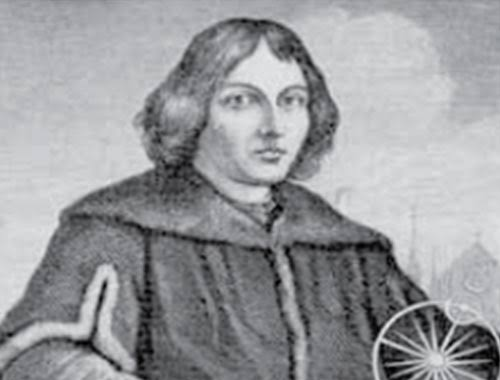
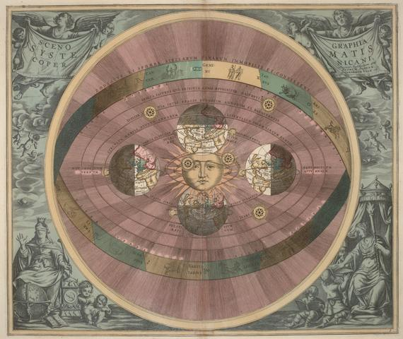
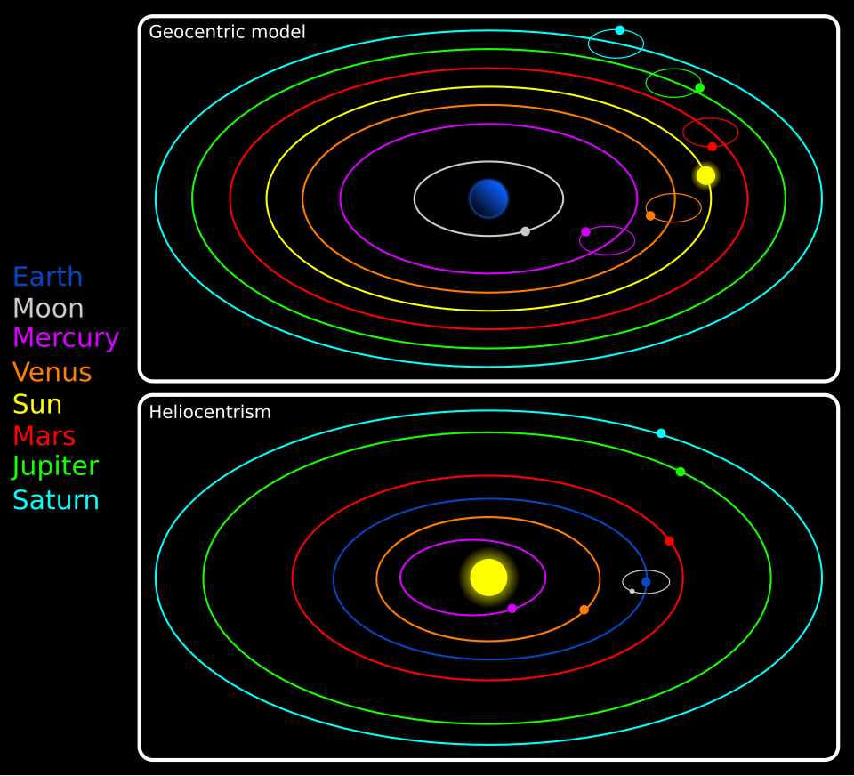
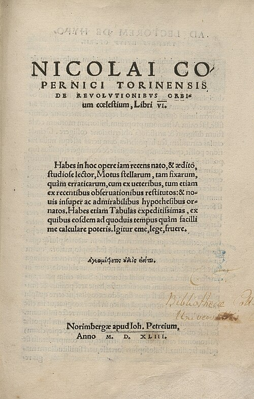
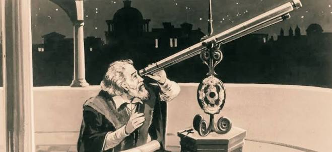
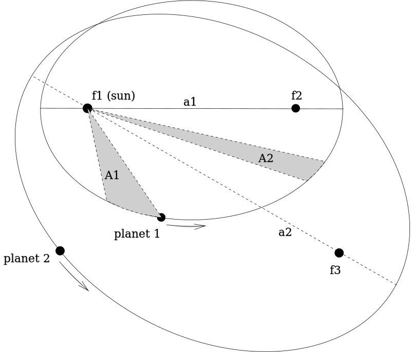

النهضة الأوروبية: دراسة شخصية علمية – نيكولا كوبرنيك
مقدمة
شهد علم الفلك في عصر النهضة تطورًا مهمًا بفضل العالم نيكولاس كوبرنيكوس (Nicolas Copernic) الذي عاش بين عامي 1473 و1543. فقد قدّم تصورًا جديدًا للكون قلب فيه التصور القديم الذي ساد لأربعة عشر قرنًا، مبدلًا مركزية الأرض بمركزية الشمس، ممّا مهّد لانطلاق الثورة العلمية الحديثة في أوروبا. فمن هو كوبرنيكوس؟ وما هي نظريته الفلكية؟ وما أبرز تأثيراتها؟
من هو كوبرنيكوس؟ وما هي أبرز محطات حياته وأعماله؟ وما هي نظرية مركزية الشمس التي جاء بها؟ وما موقف الكنيسة منها؟ وما تأثيرها على تطور علم الفلك؟
I التعريف بكوبرنيكوس
1. نشأته وتكوينه
وُلد نيكولاس كوبرنيكوس سنة 1473 في مدينة تورون (Toruń) ببولندا، في أسرة ميسورة الحال، حيث كان والده تاجرًا وأمّه من عائلة تجارية ثرية. وفي سنة 1491 التحق بجامعة كراكوف (Kraków) لدراسة الفلك والرياضيات. ثم انتقل سنة 1496 إلى إيطاليا، حيث درس القانون الكنسي في جامعة بولونيا (Bologna)، كما درس الطب في جامعة بادوفا (Padoue). وقد ألقى محاضرات في الرياضيات بروما حوالي سنة 1500، وتحصّل سنة 1503 على شهادة الدكتوراه في القانون الكنسي من جامعة فيرارا (Ferrare). ويُذكر أن عمّه لوكاش فاتزنرودي (Lucas Watzenrode) كان له دور في رعايته وتوجيهه نحو الحياة الكنسية، حيث أصبح أسقفًا على منطقة فارميا (Warmie).
2. نشاطه وأعماله
تولّى كوبرنيكوس منصبًا كنسيًا/قانونيًا في كاتدرائية فرومبورك (Frombork)، وواصل في الوقت نفسه أبحاثه في الفلك ودراساته الطبية. وقد ألّف دراسة فلكية بعنوان "الشروح" أو "التعليقات" (Commentariolus) حوالي سنة 1514، عرض فيها المبادئ الأساسية لنظرية مركزية الشمس في شكل مخطوط لم يُنشر. كما كتب دراسة اقتصادية حول العملة سنة 1517 بعنوان "في سكّ العملة" (Monetae cudendae ratio). وبين عامي 1520 و1530 ألّف كتابه الرئيس "دوران الأجرام السماوية" (De revolutionibus orbium coelestium)، الذي بلور فيه نظريته الفلكية، ونُشر هذا الكتاب سنة 1543 في نورمبيرغ (Nuremberg) قبل وفاته بفترة قصيرة. وقد تُوفي كوبرنيكوس يوم 24 ماي 1543 في فرومبورك.
كان كوبرنيكوس رجلًا متعدّد المعارف: فقيه قانوني، وطبيب، واقتصادي، وعالم رياضيات وفلك، ورجل دين. وقد جمع بين التكوين الجامعي الرصين والتجربة العملية، ما مكّنه من الجمع بين التأمّل النظري والرصد الفلكي، وصياغة نظرية علمية متماسكة على أسس رياضية.
II نظرية كوبرنيكوس الفلكية
1. التصور القديم للكون (مركزية الأرض)
سادت في أوروبا طوال أربعة عشر قرنًا نظرية مركزية الأرض (Le géocentrisme) التي وضعها العالم الإغريقي بطليموس (Ptolémée) في القرن II م في كتابه "المجسطي" (Almagest). وكانت تقوم على أن الأرض ثابتة وتقع في مركز الكون، وأن الكواكب والنجوم تدور حولها، وتترتّب حسب بعدها عن سطح الأرض بالترتيب التالي: القمر، عطارد، الزهرة، الشمس، المريخ، المشتري، زحل، ثم النجوم الثابتة. وقد توافقت هذه النظرية مع فلسفة أرسطو (Aristote) التي كانت ترى أن الأجسام الأرضية ثقيلة وتتّجه نحو المركز، ومع التصور الديني للكنيسة الذي كان يرى أن الإنسان يحتلّ مكانة مركزية في الخلق، وأن الأرض هي محور الكون الذي خلقه الله من أجله.
2. كوبرنيكوس ونظرية مركزية الشمس
قدّم كوبرنيكوس نظامًا جديدًا للكون، جعل فيه الأرض متحركة والشمس في المركز. وقد عرض هذا النظام في كتابه "دوران الأجرام السماوية" (1543)، ومن أبرز خصائصه:
- الشمس في مركز الكون: تقع الشمس في مركز الكون وتدور حولها الكواكب، وليست الأرض مركزًا للكون كما كان يعتقد سابقًا.
- الأرض كوكب: الأرض ليست جسمًا ثابتًا، بل هي كوكب من الكواكب الخاضعة للحركة مثل بقية الكواكب.
- حركات الأرض الثلاث: تخضع الأرض لثلاث حركات:
- حركة يومية: حول محورها في مدّة يوم واحد، وهي المسؤولة عن تعاقب الليل والنهار.
- حركة سنوية: حول الشمس في مدّة سنة، وهي المسؤولة عن تعاقب الفصول.
- حركة ارتجاجية: أو تغير في ميل المحور، وهي ضرورية لتفسير بعض الظواهر الفلكية.
- الحركة الظاهرية للنجوم: بيّن كوبرنيكوس أن الحركة الظاهرية للنجوم ليست إلا نتيجة بصرية ناتجة عن الحركة الحقيقية للأرض، وليست حركة فعلية للنجوم في حدّ ذاتها.
- ترتيب الكواكب: يبدأ الترتيب من الشمس: عطارد، الزهرة، الأرض (ويتبعها القمر)، المريخ، المشتري، زحل، ثم النجوم الثابتة في أقصى الكون.
مقارنة بين التصورين
| الوجه | مركزية الأرض (بطليموس) | مركزية الشمس (كوبرنيكوس) |
|---|---|---|
| مركز الكون | الأرض (ثابتة) | الشمس |
| حركة الأرض | ثابتة لا تتحرك | ثلاث حركات (يومية، سنوية، ارتجاجية) |
| الحركة الظاهرية للنجوم | حركة حقيقية للنجوم حول الأرض | نتيجة بصرية لحركة الأرض |
| التوافق الفكري | متوافقة مع أرسطو والكنيسة | مخالفة للفلسفة السائدة وللكنيسة |
| طبيعة النموذج | معقّد (يحتاج إلى "أفلاك تدوير") | أبسط وأكثر انسجامًا |
III تأثيرات النظرية الجديدة
1. موقف الكنيسة
رفضت الكنيسة النظرية الجديدة واعتبرتها مخالفة للمنطق وللدين المسيحي ولما ورد في الكتاب المقدّس، لأنّها تتعارض مع الفهم الحرفي لبعض النصوص الدينية التي تتحدّث عن ثبات الأرض وحركة الشمس. وقد تأكّد هذا الرفض بقرار صدر سنة 1616 وضع فيه كتاب "دوران الأجرام السماوية" ضمن قائمة الكتب الممنوعة (Index librorum prohibitorum). كما قامت الكنيسة بمصادرة العديد من نسخ كتاب كوبرنيكوس، ومنعت نشر أفكاره. ولم يقتصر الأمر على كوبرنيكوس، بل امتدّ إلى من تبنّى نظريته، ومن أبرز ضحايا هذا الرفض الفيلسوف الإيطالي جوردانو برونو (Giordano Bruno) الذي أُحرق حيًّا سنة 1600، وكذلك غاليليو غاليلي (Galilée) الذي حوكم سنة 1633 وأُجبر على التراجع عن قوله بمركزية الشمس.
2. تطور علم الفلك
أسهمت نظرية كوبرنيكوس في تطوير علم الفلك، وكانت منطلقًا لأعمال علماء آخرين دفعوا الفكر العلمي إلى الأمام، ومن أبرزهم:
- يوهانس كبلر (Johannes Kepler) (1571-1630): عالم ألماني، طوّر فهم المدارات فأثبت أنها إهليلجية (بيضوية) وليست دائرية كما كان يعتقد كوبرنيكوس، وصاغ قوانين حركة الكواكب الثلاثة.
- غاليليو غاليلي (Galileo Galilei) (1564-1642): عالم إيطالي، استخدم منظارًا فلكيًا تصل قدرته التكبيرية إلى نحو 20 مرّة، ورصد أدلة جديدة دعمت مركزية الشمس، منها أقمار المشتري وأطوار الزهرة وتضاريس القمر والبقع الشمسية.
- إسحاق نيوتن (Isaac Newton) (1643-1727): عالم إنجليزي، مهّدت أعمال من سبقه لما جاء به في تفسير الحركة والجاذبية، حيث صاغ قانون الجذب العام الذي فسّر سبب دوران الكواكب حول الشمس.
3. أثر النظرية على الفكر الأوروبي
لم تقتصر أهمية نظرية كوبرنيكوس على مجال الفلك فحسب، بل تجاوزت ذلك لتُحدِث تحوّلًا عميقًا في الفكر الأوروبي عموماً. فقد:
• حرّرت العلم من قيود الكنيسة والتفكير القائم على النصوص المقدّسة.
• أرست مبدأ الاعتماد على الرصد والتجربة والاستنتاج الرياضي بدلًا من التسليم للسلطة الدينية.
• أزالت الإنسان والأرض من مركز الكون، ممّا شكّل تحوّلًا جذريًا في تصوّر الإنسان لنفسه وللعالم.
• مهّدت لقيام الثورة العلمية الحديثة على يد كبلر وغاليليو ونيوتن، ولانطلاق عصر الأنوار في القرن XVIII.
خاتمة
مثّلت نظرية كوبرنيكوس الجديدة نقطة تحوّل في تحرير العلم من قيود الكنيسة، وكانت مقدّمة لانطلاق العلوم الحديثة في أوروبا، إذ فتحت الطريق أمام رصد الكون على أسس رياضية وتجريبية، ومهّدت لقيام الثورة العلمية التي غيّرت وجه العالم الحديث.
📖 تعريفات
👤 شخصيات
- نيكولاس كوبرنيكوس (Nicolas Copernic): عالم فلك بولندي (1473-1543)، درس الفلك والرياضيات بجامعة كراكوف، والقانون الكنسي بجامعة بولونيا، والطب بجامعة بادوفا. صاحب نظرية مركزية الشمس، وألّف كتاب "دوران الأجرام السماوية" (1543). يُعدّ من أبرز روّاد الثورة العلمية في عصر النهضة.
- بطليموس (Ptolémée): عالم إغريقي عاش في القرن II م في الإسكندرية، وضع نظرية مركزية الأرض التي سادت أربعة عشر قرنًا، وشرحها في كتابه "المجسطي" (Almagest).
- أرسطو (Aristote): فيلسوف إغريقي، كانت فلسفته متوافقة مع نظرية مركزية الأرض، حيث كان يرى أن الأجسام الأرضية ثقيلة وتتّجه نحو المركز.
- لوكاش فاتزنرودي (Lucas Watzenrode): عمّ كوبرنيكوس، أسقف على منطقة فارميا، كان له دور في رعايته وتوجيهه نحو الحياة الكنسية.
- يوهانس كبلر (Johannes Kepler): عالم فلك ألماني (1571-1630)، طوّر نظرية كوبرنيكوس وأثبت أن مدارات الكواكب إهليلجية (بيضوية) وليست دائرية، وصاغ قوانين حركة الكواكب.
- غاليليو غاليلي (Galileo Galilei): عالم إيطالي (1564-1642)، استخدم منظارًا فلكيًا بقدرة تكبيرية تصل إلى نحو 20 مرّة، ورصد أدلة جديدة دعمت مركزية الشمس (أقمار المشتري، أطوار الزهرة). حوكم من طرف الكنيسة سنة 1633.
- إسحاق نيوتن (Isaac Newton): عالم إنجليزي (1643-1727)، صاغ قانون الجذب العام الذي فسّر دوران الكواكب حول الشمس، وتوّج بذلك أعمال كوبرنيكوس وكبلر وغاليليو.
- جوردانو برونو (Giordano Bruno): فيلسوف إيطالي تبنّى نظرية مركزية الشمس، أُحرق حيًّا سنة 1600 بسبب آرائه التي اعتبرتها الكنيسة مخالفة للدين.
🌍 دول ومناطق
- بولندا: بلد أوروبي، وُلد فيه كوبرنيكوس سنة 1473 بمدينة تورون.
- تورون (Toruń): مدينة بولندية وُلد فيها كوبرنيكوس سنة 1473 في أسرة ميسورة الحال.
- كراكوف (Kraków): مدينة بولندية، بها جامعة التحق بها كوبرنيكوس سنة 1491 لدراسة الفلك والرياضيات.
- بولونيا (Bologna): مدينة إيطالية، بها جامعة درس فيها كوبرنيكوس القانون الكنسي منذ 1496.
- بادوفا (Padoue): مدينة إيطالية، بها جامعة درس فيها كوبرنيكوس الطب.
- فيرارا (Ferrare): مدينة إيطالية، بها جامعة تحصّل منها كوبرنيكوس على شهادة الدكتوراه في القانون الكنسي سنة 1503.
- فرومبورك (Frombork): مدينة بولندية، بها كاتدرائية تولّى فيها كوبرنيكوس منصبًا كنسيًا/قانونيًا، وتُوفي بها سنة 1543.
- فارميا (Warmie): منطقة كنسية ببولندا، كان عمّ كوبرنيكوس أسقفًا عليها.
- نورمبيرغ (Nuremberg): مدينة ألمانية، نُشر فيها كتاب كوبرنيكوس "دوران الأجرام السماوية" سنة 1543.
- روما: عاصمة إيطاليا، ألقى فيها كوبرنيكوس محاضرات في الرياضيات حوالي سنة 1500.
⚔️ أحداث هامة
- نشر كتاب "دوران الأجرام السماوية" (1543): الكتاب الرئيس لكوبرنيكوس الذي بلور فيه نظريته الفلكية بمركزية الشمس، نُشر في نورمبيرغ سنة 1543 قبل وفاته بفترة قصيرة.
- قرار الكنيسة 1616: قرار صادر عن الكنيسة وضع فيه كتاب كوبرنيكوس "دوران الأجرام السماوية" ضمن قائمة الكتب الممنوعة، بسبب مخالفته للدين المسيحي.
- محاكمة غاليليو 1633: محاكمة الكنيسة للعالم الإيطالي غاليليو غاليلي بسبب تبنّيه لمركزية الشمس، وأُجبر على التراجع عن قوله.
- إحراق جوردانو برونو 1600: إحراق الفيلسوف الإيطالي جوردانو برونو حيًّا سنة 1600 بسبب آرائه التي اعتبرتها الكنيسة مخالفة للدين، ومنها تبنّيه لمركزية الشمس.
📜 كتب ومؤلّفات
- الشروح أو التعليقات (Commentariolus): دراسة فلكية ألّفها كوبرنيكوس حوالي سنة 1514، عرض فيها المبادئ الأساسية لنظرية مركزية الشمس في شكل مخطوط لم يُنشر.
- دوران الأجرام السماوية (De revolutionibus orbium coelestium): الكتاب الرئيس لكوبرنيكوس الذي ألّفه بين 1520 و1530، ونُشر سنة 1543 في نورمبيرغ، وبلور فيه نظريته الفلكية بمركزية الشمس.
- في سكّ العملة (Monetae cudendae ratio): دراسة اقتصادية ألّفها كوبرنيكوس سنة 1517 حول العملة.
- المجسطي (Almagest): كتاب بطليموس في القرن II م، شرح فيه نظرية مركزية الأرض التي سادت أربعة عشر قرنًا.
- قائمة الكتب الممنوعة (Index librorum prohibitorum): قائمة أصدرتها الكنيسة سنة 1616، وُضع فيها كتاب كوبرنيكوس "دوران الأجرام السماوية" ضمن الكتب الممنوعة.
📅 سنوات وفترات
- II م: القرن الذي عاش فيه بطليموس ووضع فيه نظرية مركزية الأرض.
- 1473: سنة ولادة نيكولاس كوبرنيكوس بمدينة تورون البولندية.
- 1491: التحاق كوبرنيكوس بجامعة كراكوف لدراسة الفلك والرياضيات.
- 1496: انتقال كوبرنيكوس إلى إيطاليا لدراسة القانون الكنسي بجامعة بولونيا.
- 1500: إلقاء كوبرنيكوس محاضرات في الرياضيات بروما.
- 1503: حصول كوبرنيكوس على شهادة الدكتوراه في القانون الكنسي من جامعة فيرارا.
- 1514: تأليف كوبرنيكوس "الشروح" (Commentariolus) التي عرض فيها المبادئ الأساسية لنظرية مركزية الشمس.
- 1517: كتابة كوبرنيكوس دراسة اقتصادية حول العملة "في سكّ العملة".
- 1520-1530: تأليف كوبرنيكوس كتابه الرئيس "دوران الأجرام السماوية".
- 1543: نشر كتاب "دوران الأجرام السماوية" في نورمبيرغ، ووفاة كوبرنيكوس يوم 24 ماي.
- 1600: إحراق الفيلسوف الإيطالي جوردانو برونو حيًّا بسبب تبنّيه لمركزية الشمس.
- 1616: قرار الكنيسة بوضع كتاب كوبرنيكوس "دوران الأجرام السماوية" ضمن قائمة الكتب الممنوعة.
- 1633: محاكمة غاليليو غاليلي من طرف الكنيسة وإجباره على التراجع عن قوله بمركزية الشمس.
📌 أخرى
- مركزية الأرض (Le géocentrisme): نظرية فلكية وضعها بطليموس في القرن II م، تقوم على أن الأرض ثابتة وتقع في مركز الكون، وأن الكواكب والنجوم تدور حولها.
- مركزية الشمس (L'héliocentrisme): نظرية فلكية جديدة قدّمها كوبرنيكوس، تقوم على أن الشمس في مركز الكون، وأن الأرض كوكب متحرك يدور حولها مع بقية الكواكب.
- الحركة اليومية للأرض: دوران الأرض حول محورها في مدّة يوم واحد، وهي المسؤولة عن تعاقب الليل والنهار.
- الحركة السنوية للأرض: دوران الأرض حول الشمس في مدّة سنة، وهي المسؤولة عن تعاقب الفصول.
- الحركة الارتجاجية للأرض: تغيّر في ميل محور الأرض، وهي حركة ضرورية لتفسير بعض الظواهر الفلكية.
- الحركة الظاهرية للنجوم: نتيجة بصرية ناتجة عن الحركة الحقيقية للأرض، وليست حركة فعلية للنجوم في حدّ ذاتها، حسب كوبرنيكوس.
- الثورة العلمية الحديثة: حركة علمية انطلقت من أعمال كوبرنيكوس، وامتدّت على يد كبلر وغاليليو ونيوتن، وأرست أسس العلم الحديث القائم على الرصد والتجربة والاستنتاج الرياضي.
- المنظار الفلكي (Le télescope): آلة استخدمها غاليليو بقدرة تكبيرية تصل إلى نحو 20 مرّة، ورصد بها أدلة جديدة دعمت مركزية الشمس (أقمار المشتري، أطوار الزهرة، تضاريس القمر، البقع الشمسية).
- الجذب العام (La gravitation universelle): قانون صاغه إسحاق نيوتن، يفسّر دوران الكواكب حول الشمس، وتوّج بذلك أعمال كوبرنيكوس وكبلر وغاليليو.
- المدار الإهليلجي: شكل مدار الكواكب الذي أثبته كبلر (بيضوي) وليس دائريًا كما كان يعتقد كوبرنيكوس.
🗺️ خرائط ومعطيات مصورة





